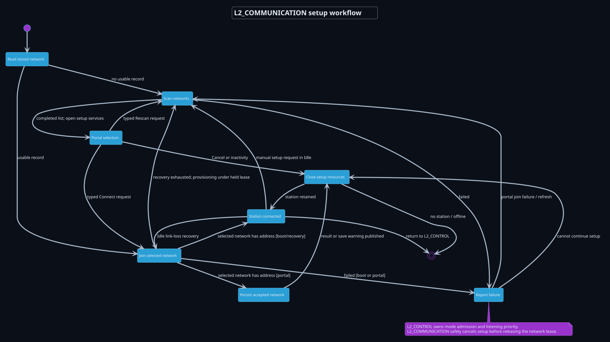
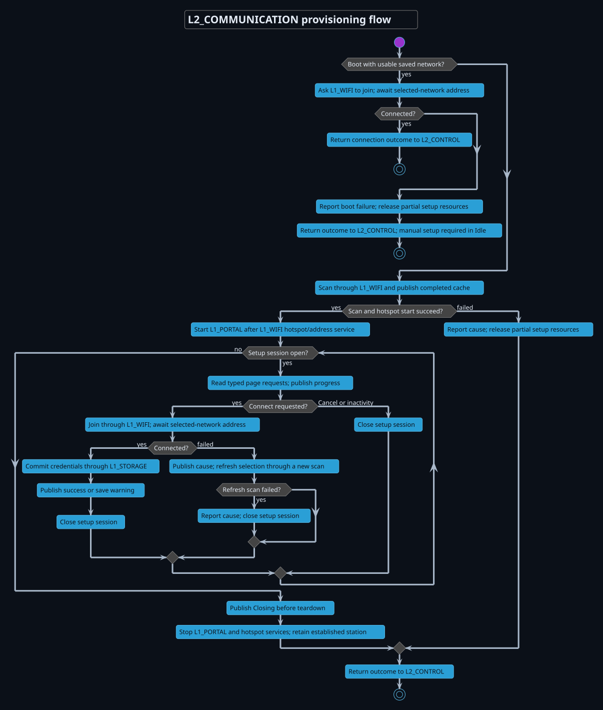
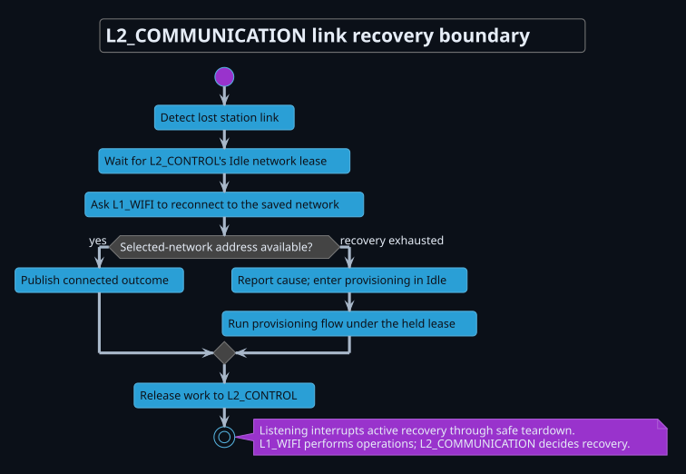
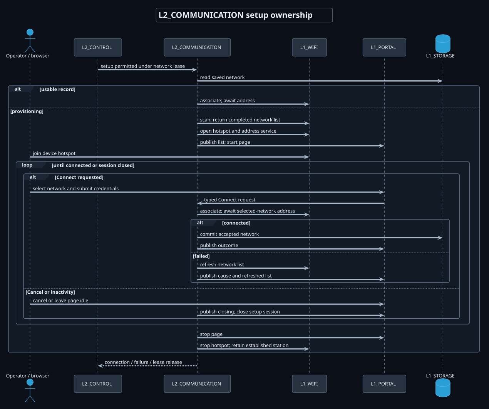
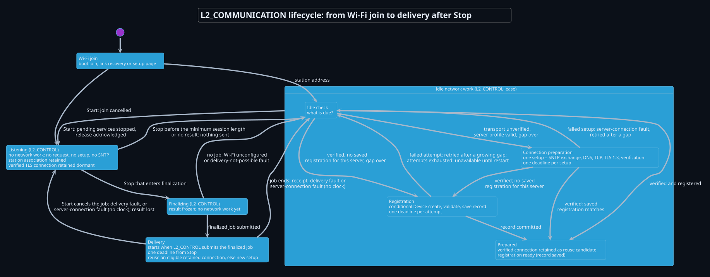

L2_COMMUNICATION architecture
Workflow ownership and service boundaries for Wi-Fi setup, recovery and server communication.
Setup state machine


Provisioning flow


Link recovery


Setup ownership sequence


Communication lifecycle

